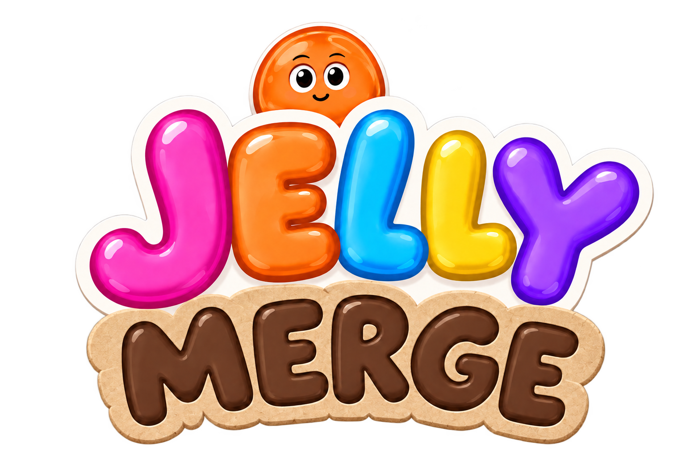
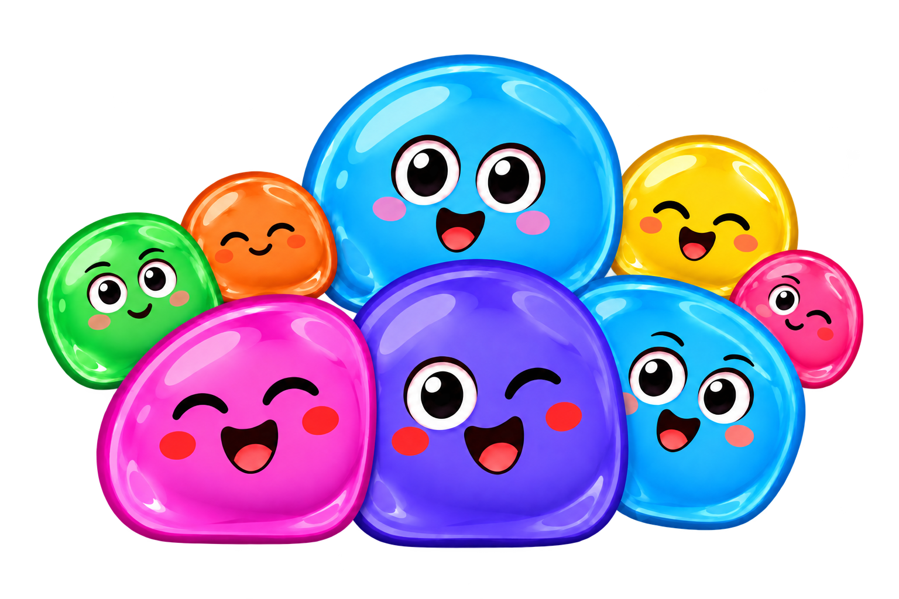

Squish, merge, smile.
Little jellies. Big personalities. Drop, bounce and merge your way through a lively pile of new friends.
Getting ready for Android and iPhone.
Meet the jellies
They have feelings.
Listen to their voices, follow their glances and watch their reactions when a new neighbour lands a little too close.
Make a little room.
Match jellies, build combos and use Swap, Magnet and Pulse. Keep the pile below the danger line and enjoy the relief of a good save.
One more discovery.
Meet ten jelly tiers, find rare shiny friends for your collection and try a Daily Challenge with a shared sequence and a changing rule.
Keep your records on your device, pause a long round and come back to it. And when Jelly Party arrives, give your little crowd a moment to shine.